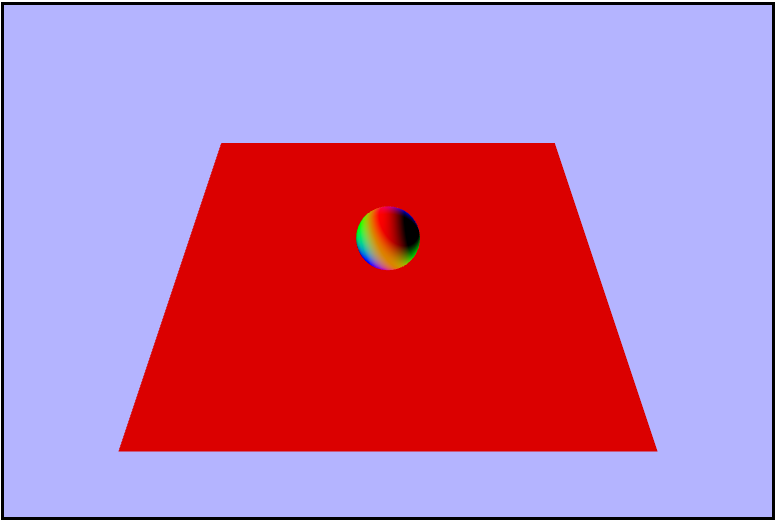

Color
What is color? It is just the way that our eyes percieve different wavelengths of visible light. Only
a very small portion (about $300 nm$) of the electromagnetic spectrum is composed of this so called
visible light.
And from within this visible light, the human eye has 3 ranges that it is sensitive to: short, medium, and
long. These ranges don't correlate exactly to specific colors, but they are very close to blue (short), green
(medium), and red (long). This is why we can use RGB to model colors, and it is a very common method of
doing so in computers although there are others. Among modelling colors is the question of: How do we
combine them?. One way to combine them is using the additive method which is similar to how light works.
Starting from black, each successive color added brightens the color eventually becoming white. The other
way is using the subtractive method which is similar to how painting works. Starting from white, each successive
color added darkens the scene trending towards black.
Spectral Sensitivity

Color Mixing

Global (Indirect) Illumination
Global Illumination is a model for lighting in which the light for a point is calulated as if everything
else in the scene is a light source (whther or not it emits its own light). Global illumination is by it's
nature very expensive and near, if not, impossible to compute in real time until very recently. It is
sort of built into the logic of a ray tracer in which the light reflects off of objects and effects the
final color others. Global illumination, however, does create high fidelity renders and is often the choice
for things like 3D models and animations where timing is not an issue (i.e. not computed in real time).
One attempt to replicate global illumination in real time is using what are called Light Maps.
Light maps are pre-computed textures that model the global lighting contributions at each point, but if
you'll notice there is an issue with this approach due to them being pre-computed. Since the lighting for
each point is determined before the scene is rendered, they don't handle dynamic lighting properly. If
an object were to come into the scene and occlude a brightly lit wall, it would remain that way since it
didn't think there was an object when it calculated the lighting at that point.
Lightmap applied to a scene

Local (Direct) Illumination
Contrary to global illumination, local illumination only takes into account the light contribution directly
from a light source to calculate the lighting for a fragment. Local illumination is also much faster than
global, but doesn't provide nearly as high a quality to the scene; and it is also much more practical, so
instead of trying to use true global illumination, techniques have been developed to approximate it using
multiple "frames" (for lack of a better word) of local illumination using different Light/surface interactions.
A very drastic difference between local and global

A very drastic difference between local and global

Light/Surface Interactions
- Transmission - Light passes throught (refracts) a medium (semi-transparent)
- Specular - Reflections more strongly distributed in mirrored direction
- Diffuse - Reflections uniformly distributed in upper hemisphere
- Absorption - Light energy is absorbed into the matrial (some portion of the spectrum)
- Emission - The surface is a source of light
Flat Shading
Flat shading is a type of shading in which light and normal directions are taken per face. This model with
lower vertex counts causes many flat faces to appear instead of a smooth rounding, and creates block like
objects. One other sidde effect that is common with but not exculsive to flat shading is mach banding. Mach
banding is the effect in which human eyes accentuate the boundary between colors causing a wavy, ripple
like effect. I actaully encountered this myself during my journal on Raytracing
due to the compression algorithm used in my gif recorder. Flat Shading was basically necessary decades ago
due to the computational power of early graphics processors.
Flat Shaded Sphere

Mach Banding in the Ray Tracer

Gouraud Shading
In Gouraud shading, light and normal directions are calculated per vertex, so all of the lighting is done
in the vertex shader and interpolated for each fragment. This method is sort of an improvement on flat
shading because it makes smoother transitions between faces, but it lacks an accurate specular component
and still shows some remenant of the wireframe of the object. As with flat shading, this is exasperated
as the number of vertecies decreases.
Gouraud Shaded Sphere

Phong Shading
Phong shading is the pinnacle of the rasterization lighting techniques I'll cover here, but it is one step
further than Gouraud shading. In Phong shading, the lighting is calculated per pixel and the normals are
calulated either per vertex or per pixel. This allows for very close to photorealistic lighting of a scene
without needing massive amounts of verticies per object (which admittedly is not nearly the issue it was
a decade ago). The phong model calulates the total light for each pixel by combining the ambient, diffuse,
and specular (and emmissive) light contributions.
Gouraud Shaded Sphere

Flat vs Gouraud vs Phong

Light & Surface Material & Calculating Phong Lighting
Properties of light interact with properties of the material for each type, and to find the total illumination
using Phong lighting we can use the equation(s) below.
$$\otimes \ =\ Component\ Multiplication \\ \\$$
$$P_{d}\ =\ Porportion\ of\ diffuse \\
P_{s}\ =\ Porportion\ of\ specular$$
$$\underline{Light\ Color} \\
Ambient\ L_{a} \\
Diffuse\ L_{d} \\
Specular\ L_{s}$$
$$\underline{Material\ Color} \\
Ambient\ M_{a} \\
Diffuse\ M_{d} \\
Specular\ M_{s} \\
Emission\ M_{e}$$
$$color_{pixel}\ =\ Emissive\ +\ Ambient\ +\ Diffuse\ +\ Specular$$
$$color_{pixel}\ =\ M_{e}\ +\ L_{a}\ \otimes \ M_{a}\ +\ L_{d}\ \otimes \ M_{d}\ *\ P_{d}\ +\ L_{s}\ \otimes \ M_{s}\ *\ P_{s}$$
Diffuse
When light interacts with a surface, it can scatter in any possible direction. A perfectly diffuse surface
has an equally likely chance of scattering the light in each available direciton, which is the hemisphere
above. Types of this material are: rocks, chalk, and construction paper. Diffuse lighting is uniformly
distributed and does not depend on the direction we are viewing the surface from. Using Lambert's
Law, we know that the amount of diffuse light attenuates based on the cosine of the angle between it and
the surface normal. It can be calculated using:
$$color_{diffuse}\ =\ L_{d}\ \otimes \ M_{d}\ *\ max(\hat{n}\ \cdot \ \hat{\ell},\ 0)$$
Specular
Specular light will bounce in a preferred direction in a non-uniform distribution. It is also dependent on\
the way in which we are viewing the surface. This term is where we need t take into account the intensity
based on the direction which is referred to as the Phong term.
$$\hat{r}\ \rightarrow \ reflection\ direction \\
\hat{v}\ \rightarrow \ view\ direction \\
n \rightarrow \ specular\ power$$
$$Phong\ =\ (max(\hat{r}\ \cdot \ \hat{v},\ 0))^{n}$$
$$color_{specular}\ =\ L_{s}\ \otimes \ M_{s}\ *\ (max(\hat{r}\ \cdot \ \hat{v},\ 0))^{n}$$
Ambient
Ambient Light is a very simple way to approximate global lighting. It is the light that is left over in
the scene that has been scattered around lots of times of different objects. It can be found using the
ambient color of the light and the material.
$$color_{ambient}\ =\ L_{a}\ \otimes \ M_{a}$$
Light Source Emission Models
Directional
Directional light is a model that is similar to how the sun shines light on Earth. It models light rays
coming from infinitely far away and will all have the same direciton. Directional light does not
depend on the position of the light source and it does not attenuate with distance.
Point
The point light is a model that simulates light going in all directions from a single source similar to a
light bulb. Point light does depend on the position of the light source and it also does
attenuate with distance.
Spotlight
The spotlight is a model that simulates light going in a direction from a single source similar to how a,
well, spotlight behaves. Spotlighting does depend on light source position and direciton, and it
attenuates by distance and angle from the center direction.
Implementing Phong Light (Directional)
Thank you for joining me on our latest installment of Adventures in Fragment Shading. This week
we'll really be unleashing some of the power of fragment shading by modeling lighting! Let's take a look
at what our initial scene looks like.
Getting the Lambert Term
In order to calculate the lighting of the scene, we will need to calculate the Lambert Term or
the amount of light that's reflected. To calculate it we need a normalized light direction $\hat{\ell}$ and
a normalized normal vector $\hat{n}$, so let's start by calculating those. Here are the variables we have
to work with. Note that $\vec{\ell}$ is constant for the entire scene while $\hat{n}$ is interpolated for
each fragment.
uniform vec3 uLightDirection;
uniform vec3 uCameraPosition;
uniform sampler2D uTexture;
varying vec2 vTexcoords;
varying vec3 vWorldNormal;
varying vec3 vWorldPosition;
First let's normalize the light direction using the builting glsl function normalize().
vec3 normalizedLight = normalize(uLightDirection);
gl_FragColor = vec4(uLightDirection, 1.0);
gl_FragColor = vec4(normalizedLight, 1.0);
Now let's go ahead and normalize the world normal in the same way we did the light direction.
vec3 normalizedWNormal = normalize(vWorldNormal);
...
gl_FragColor = vec4(normalizedWNormal, 1.0);
Now that we have our vectors normalized we can go ahead and calculate the Lambert Term and visualize it.
And in order to avoid possibly overloading (or underloading?) with a negative value by taking the max
of it and $0.0$.
float lambert = dot(normalizedWNormal, normalizedLight);
...
gl_FragColor = vec4(lambert, lambert, lambert, 1.0);
Calculating the Phong Term
The last thing we need to calculate to model the lighting is the Phong term. And to find it, we need to also
find both the vector from the point of intersection to the eye and the reflection vector about the normal.
We can start by finding the vector from the point in the scene to the camera's position and visualizing it.
vec3 eyeVector = normalize(uCameraPosition - vWorldPosition);
...
gl_FragColor = vec4(eyeVector, 1.0);
Next, let's find and visualize the refleciton vector. Again, we will find this in the fragment shader
and we'll be using the Lambert term to get it. Intrestingly, GLSL has a builtin
reflect() function, but it did not give the correct result, so maybe I wasn't
using it quite right.
vec3 reflectionVector = normalize(2.0 * lambert * normalizedWNormal - normalizedLight);
...
gl_FragColor = vec4(reflectionVector, 1.0);
oops that should be a $-\ normailzedLight$
reflect(normalizedLight, normalizedWNormal);
hmmm almost seems like it's the wrong direction

We now have all of the ingredients we need to calculate the phong term, so let's do that now and visualize
the result. Foreshadowing a tiny bit: but the following doesn't really work, but it's not clear
it doesn't until we combine all of the lighting, so lets prented we don't know it won't work until then.
float phong = max(pow(dot(reflectionVector, eyeVector), 64.0), 0.0);
...
gl_FragColor = vec4(phong, phong, phong, 1.0);
Putting it All Together
We hae calculated everything we need to add Phong shading to our scene 🎉! First we need to calculate the
contribution fromm the diffuse lighting. We will use the given texture color as the material color and
a white light (1.0).
vec3 diffuseColor = 1.0 * texture2D(uTexture, vTexcoords).rgb * max(lambert, 0.0);
...
gl_FragColor = vec4(diffuseColor, 1.0);
Note that this is where a big chunk of the color in the scene comes from
Next, it's time to tackle the specular contribution. This is where our phong term comes into play, but
as with before, there doesn't seem to be a problem with it. We wll use a white light again, and instead
of using the texture color for the material color here, we're going to use a constant of $0.3$ in each
channel.
vec3 specularColor = 1.0 * vec3(0.3, 0.3, 0.3) * phong;
...
gl_FragColor = vec4(specularColor, 1.0);
Note that this is very similar to the phong term by itself
We finally have all of the different light calculations completeled and all that's left to do is to add
them all up.
vec3 ambient = texture2D(uTexture, vTexcoords).rgb * 0.1;
vec3 finalColor = ambient + diffuseColor + specularColor;
...
gl_FragColor = vec4(finalColor, 1.0);
*record scratching noise*

Why is so muchof the scene completely black?? Well, here's when we "discover" (if I hadn't said
anything earlier) that something is wrong. Confused, I started to retrace my steps and check each piece
one by one and they all seemed right. Hmmmm maybe if I ignore some of the final light contributions I'll
notice something, and when I left out the specular contribution everything looked good. It seems
as though the apparent problem is indeed in te specular component but why? It should be moslty black
anyway right? And adding $0$ shouldn't overload (or underload) the color channels. Cut to a couple days
later after me watching the lectures again and again and I notice something in the phong term calulation.
float phong = max(pow(dot(reflectionVector, eyeVector), 64.0), 0.0);
Seems like it should be returning a non-negative number since it's taking the max of it with $0$ and
the result of the dot product is being raised to and even power anyways. So why? Long story short,
something in GLSL is causing a negative to a power to return null or NaN. So how do we fix it? Well
we just need to switch the order of the function calls and take the max of $0$ and the dot product result
and raise that to a power.
float phong = pow(max(dot(reflectionVector, eyeVector), 0.0), 64.0);
Rotating the Light
Now that we have properly added the Phong shading to our scene, let's make the light rotate to
see how it affects the the lighting. Since we want to otate the light horizontally and vertically,
what that is really saying is we want to rotate it around $2$ axes. To rotate it horizontally we'll need
to rotate around the $y-axis$ or in the $xz-plane$ whenever $a,\ d,\ \leftarrow,\ or\ \rightarrow$ is pressed,
and to rotate the light vertically we'll need to rotate it around the $x-axis$ or in $yz-plane$ whenever
$w,\ s,\ \uparrow,\ or\ \downarrow$ is pressed. Since memory allocations ar slooow let's pre-allocate
our two rotation matricies as globals instead of doing it each draw frame.
let lightRotationHorizontal = new Matrix4();
let lightRotationVertical = new Matrix4();
let cameraYaw = 0.0; // rotation y -- horizontal
let cameraPitch = 0.0; // rotation x -- vertical
...
function updateAndRender() {
// reset the angles to avoid endless spinning
// and varying spin speeds
cameraPitch = 0;
cameraYaw = 0;
// rotate forward (x-axis)
if (appInput.up || appInput.w) {
cameraPitch = -1;
// rotate backwards (x-axis)
} else if (appInput.down || appInput.s) {
cameraPitch = 1;
// rotate left (y-axis)
} else if (appInput.left || appInput.a) {
cameraYaw = -1;
// rotate right (y-axis)
} else if (appInput.right || appInput.d) {
cameraYaw = 1;
}
// the light direction is a vector4 (but really a vector3 since we don't care about w)
// so we need to multiply the rotation by the direction and re-assign.
// looking back I'm not sure if it would have had any impact to just multiplying the
// rotation matricies together first then multiplying the vector once but probably
// would have been slower
lightDirection = lightRotationHorizontal.makeRotationY(cameraYaw).multiplyVector(lightDirection);
lightDirection = lightRotationVertical.makeRotationX(cameraPitch).multiplyVector(lightDirection);
...
}
Modeling a Point Light
Everything we have done up to ths point was using a directional light source, and now it's time to switch
to using a point light source. First things first, let's go ahead and change all the occurences of
light direction variables to a more appropriate name like lightPostion, and make sure that everything
still works properly before moving on. Once that's all good and working, we can set the light position
to a reasonable position say $(4,\ 1.5,\ 0)$. Once we have that let's move into the fragment shader
(YAY!!!!) to light up the scene. Instead of using the light direction from before we want to calulate
the direction at each point using the light position and use that value. I decided to just go ahead
and lump this into one line along with the normalization for conciseness, but it could just as well
be done in multiple lines instead.
vec3 normalizedLight = normalize(uLightPosition - vWorldPosition);
Putting it all together we get something like this
Making the Light Orbit
Right now only one side of the scene is ever lit, so in order to see how the restof it looks with the
light let's make it orbit around the center sphere. To do this we'll want to rotate it horizontally,
or around the $y-axis$, in order to keep it steady in the $xz-plane$ (at a heighht of $1.5$). And
in another small optimization attempt, let's declare our rotation matrix as a global to avoid bogging
dwn the draw frame with another mmoery allocation.
let lightOrbitalRotation = new Matrix4();
let cameraYaw = -45; // negative so we an go counter-clockwise
...
function updateAndRender() {
...
lightPosition = lightOrbitalRotation.makeRotationY(time.deltaTime * cameraYaw).multiplyVector(lightPosition);
...
}
That looks like a circle

Adding Another Object (a Barrel)
Now it's time to really put our shader to the test by adding some extra geometry to the scene (a barrel).
So let's load up the barrel and render it in basically the same way we did the sphere, by loading the JSON
data from a file, loading the texture from a file, creating a new WebGLGeometryJSON to hold it and rendering
it in our updateAndRender function, and if we do it right we should get a perfectly sized barrel placed
nicely in the scene.
JK! It's attack of the Giant barrel!!
Hopefully you saw that one coming as it's just a good idea to assume assets won't immediately work your
project. To remedy this, let's just scale it down by a fair amount of $0.3$ in all directions and moving
it over to the corner with a translation of something like $(-5,\ 2,\ -5)$ and now we should actually
have a well sized and placed barrel in our scene.
Much better!

Notice how the back side of the barrel is never lit

Adding a Physical Light
We're alomostdoen with the point light, but it's a bit hard to tell where the light actually is, so let's
a sphere to represent the point light. Luckily we already have the JSON for a sphere loaded up in the
program, so we can just instantate a new instance of WebGLGeometryJSON using the same sphere json as before.
Also, we don't want the phong shading to be applied to the sphere itself; it would make more sense to just
model it using white light, so that means another shader program (YAAAAAAAAAAAAAAAAAY!!!). Alas, the
shaders we want for this are tragically very simple so Adventures in Fragment Shading will not
be returning this week for a second episode :(. Anyways, one last thing we'll need to do it to make sure
the new sphere is rotating along withthe light position so we'll need to account for that each draw frame,
but luckilysince we are already rotating the light itself, we don't need a new rotation matrix, we just need
to translate the sphere by the position of the light (after it has been rotated). We are also goin to want
it to stay at a certain scale, so let make a constant scale matrix to hold that scale.
const lightSphereScale = new Matrix4().makeScale(0.005, 0.005, 0.005);
// create the new smple shader program to render the sphere solid white
lightSphereShaderProgram = createCompiledAndLinkedShaderProgram(loadedAssets.lightSphereTextVS, loadedAssets.lightSphereTextFS);
lightSphereShaderProgram.attributes = {
vertexPositionAttribute: gl.getAttribLocation(lightSphereShaderProgram, "aVertexPosition"),
};
lightSphereShaderProgram.uniforms = {
worldMatrixUniform: gl.getUniformLocation(lightSphereShaderProgram, "uWorldMatrix"),
viewMatrixUniform: gl.getUniformLocation(lightSphereShaderProgram, "uViewMatrix"),
projectionMatrixUniform: gl.getUniformLocation(lightSphereShaderProgram, "uProjectionMatrix"),
};
lightSphereGeometry = new WebGLGeometryJSON(gl);
lightSphereGeometry.create(loadedAssets.sphereJSON);
lightSphereGeometry.worldMatrix.makeIdentity();
...
function updateAndRender() {
// re-position and scale the sphere to be "on" the light
lightSphereGeometry.worldMatrix.makeTranslation(lightPosition).multiply(lightSphereScale);
...
// render the sphere using the new shader program
lightSphereGeometry.render(camera, projectionMatrix, lightSphereShaderProgram);
...
}
And our new vertex and fragment shaders respectively.
// very simple vertex shader
// just render each vertx as it's passed in
precision mediump float;
attribute vec3 aVertexPosition;
uniform mat4 uWorldMatrix;
uniform mat4 uViewMatrix;
uniform mat4 uProjectionMatrix;
void main() {
gl_Position = uProjectionMatrix * uViewMatrix * uWorldMatrix * vec4(aVertexPosition, 1.0);
}
// even simpler fragment shader
// we don't care about anything in the world,
// just render every fragment white
precision mediump float;
void main() {
gl_FragColor = vec4(1.0, 1.0, 1.0, 1.0);
}
And once we have that all set up we're done and there should be a nice little white sphere following around
the point light.
🤨 And no. It's not just you.
It's time once again to put my debugging skills to the test to try and figure out what the heck is going on.
And let me begin by facepalming because when I figured it out, that's exactly what I did. So to begin let's
see if we can't just get the sphere into the scene without rotating the light because maybe the
translation is sending it off of the screen.
Next maybe I'll just try not scaling down the sphere since maybe it's just too small.
Maybe something is wrong with the translation to the light vector all together; instead of trying to
translate by the vector, let's hard code the translation.
lightSphereGeometry.worldMatrix.makeTranslation(4, 1.5, 0);
Ok, so here's what we know at this point: for some reason when we try to translate using the lightPostion
vector itself we get nothing, but if we hard code the translation using the same values we see a giant white
sphere...K. Cut to a little while later and I find the problem, and what a pesky little bug it was. Rememeber
how earlier I said that the lightPostion was a vector4 but we didn't care about the $w$? Well, it turns out
that while that is indeed true light with respect to the fragment shader, it's not for the js, and it
actually causes a completely wrong translation of the light sphere geometry and here's why. I defined
the lightPosition vector in the file like this:
let lightPosition = new Vector4(4, 1.5, 0, 0);
Notice that the $w$ coordinate is set to a $0$. That means that we are essentiallyu treating this vector
as, well, a vector, so it does't have a position. Why does that matter? It means that translations don't
the intended effect on them since they are relative to the scene. Now, if we simply change that $w$
coordinate to a $1$ we are treating this object as a point with respect to the origin, and that will
allow translations to make sense and work properly. Working to get the light properly positioned in the
scene, here are some of the progress steps I took before adding back in the barrel and center sphere.
Success!

Adding everything together


{kind=link}
{kind=link}
{kind=link}